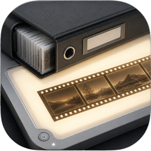
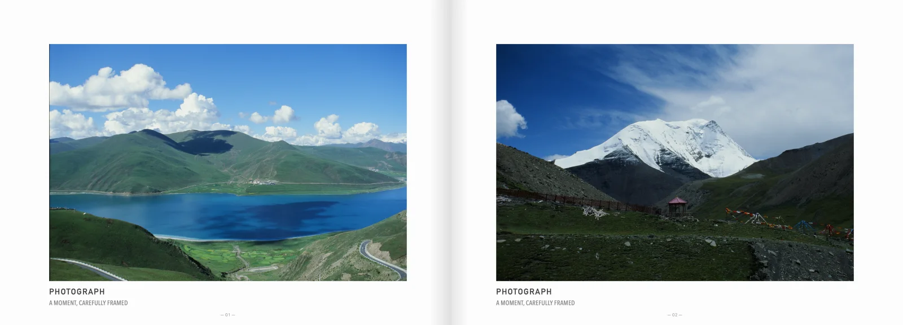
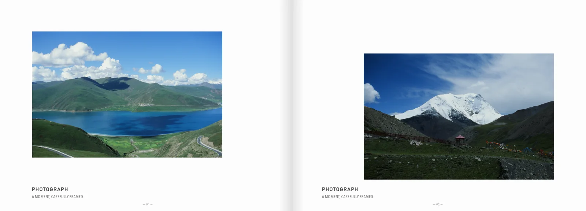
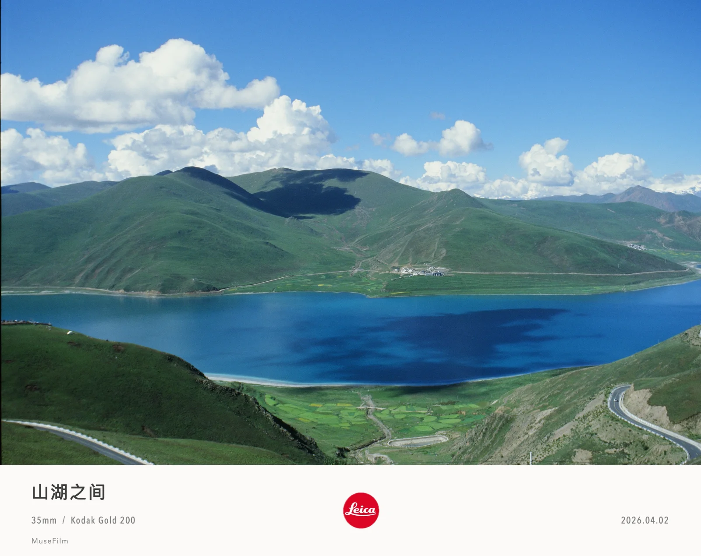
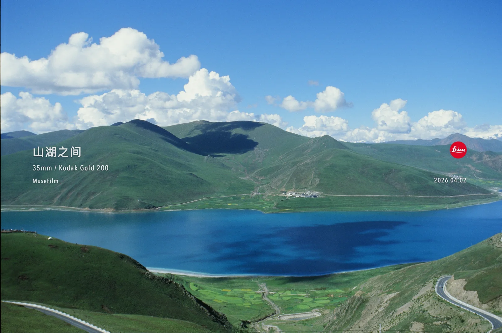
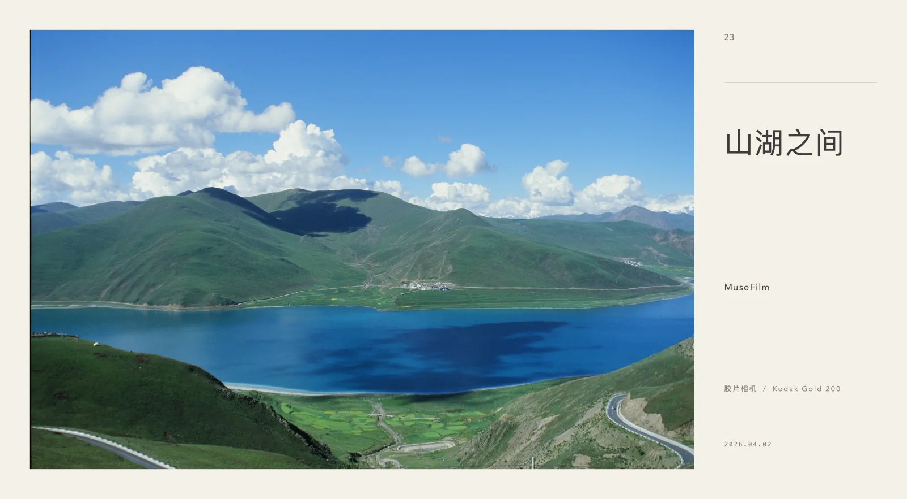
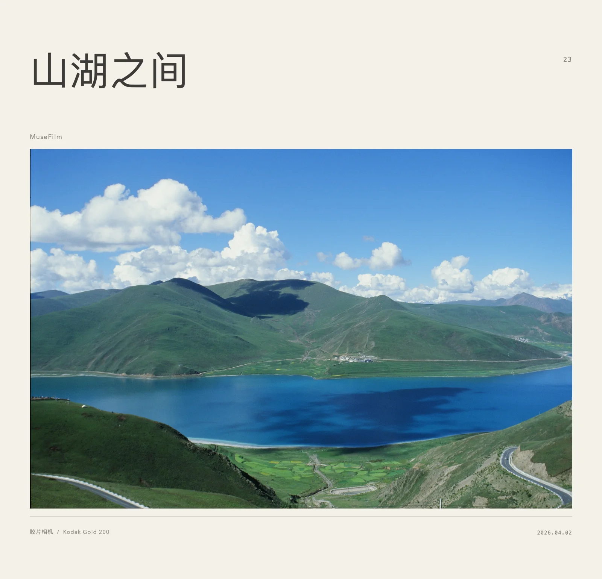
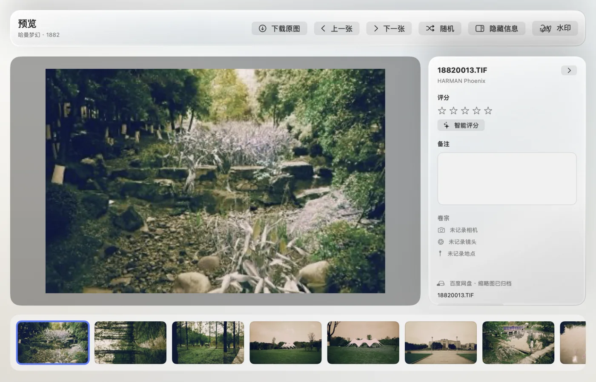

为每一卷光，留一张观片台。
MuseFilm
让一整卷光，
重新回到眼前。
MuseFilm 把胶卷、扫描与拍摄记忆安放在一处。像在观片台上展开底片，先看见一卷的呼吸，再靠近那张真正留下来的照片。
近期新功能仅限 macOS · Windows 版本说明 ↗270 次 GitHub Releases 已验证下载

MuseFilm

为每一卷光，留一张观片台。
让一整卷光，
重新回到眼前。
MuseFilm 把胶卷、扫描与拍摄记忆安放在一处。像在观片台上展开底片，先看见一卷的呼吸，再靠近那张真正留下来的照片。
近期新功能仅限 macOS · Windows 版本说明 ↗270 次 GitHub Releases 已验证下载
MACOS · 01 / 08
从胶卷开始
围绕每一卷整理照片、日期、相机、地点、标签与冲扫记录，让一组扫描重新成为完整的拍摄记忆。
MACOS · 01 / 08
胶卷库
保存胶片品牌、感光度、格式与使用记录，在下一次装卷之前重新找到熟悉的色彩。
MACOS · 01 / 08
数字观片台
像查看底片一样浏览整卷影像，在全局、细节和元数据之间自然切换。
MACOS · 01 / 08
重新发现
按时间、器材、胶片、地点与标签快速回到某一卷、某一次旅行或某一束光。
— 次访问在此停留
滚动展开胶片从设计开始，本地优先
本地归档，不重复建库，不强制迁移。
照片仍然保存在原来的硬盘位置。你可以自由备份、迁移，也可以在离开 MuseFilm 后继续拥有完整的照片库。底片漂流仅上传你主动确认的分享副本。
MUSEFILM · macOS 近期更新
让照片成为画册、短片与带有自己落款的作品。从整理到表达，在 MuseFilm 里继续创作。
以下新功能目前仅在 macOS 版提供编排照片与跨页，导出图片、PDF、摄影短片或 Live Photo。
可免费编辑与预览，正式导出按权益解锁。


为照片选择合适的留白与落款，切换不同的版式语言。
基础模板可用；完整模板与批量导出需对应权益。




胶卷照片轮换、光页影像与音乐可视化，延伸到你的日常桌面。
基础照片轮播可用；视频桌面与音乐功能按权益解锁。
先用缩略图轻量归档，再按需下载原图。
目前仍处于 Beta 测试；连接、目录读取及原图下载受百度审核、账号权限与服务规则影响。
macOS · Plus / Pro 及有效 Pro 试用

拟物导入
像装入胶片一样选片归档，随时清楚地取消或退出。
手动开启 / 曲面贴纸 / 清晰退出
胶片足迹
地图与时间线同屏，点击地点，回到对应的卷宗与照片。
地图与时间线 / 地点筛选 / 卷宗联动
底片漂流
寄出一张作品，拆开另一位摄影者的来信，收藏或送上感谢。
登录即可参与 / 每天最多一次 / 支持举报
macOS 功能展示 · 度盘导入仍处于 Beta 测试。
MUSEFILM / macOS
以下为当前 macOS 会员版的应用内方案说明。Windows 尚未同步本页展示的新功能及权益。
10 卷胶卷档案、5 种自定义胶片与 5 件自定义器材。包含档案编辑与备份、基础水印、光页编辑预览，以及每日一次底片漂流。
100 卷档案、30 种自定义胶片与 30 件自定义器材。完整水印模板、批量导出、索引图导出、胶卷联动与视频桌面；每个付费月赠送 1 个完整光页项目，激活后可在 24 小时内导出。
包含 Plus 的功能，档案与自定义资源不限数量。会员有效期内光页图片、PDF、摄影短片与 Live Photo 不限次数导出，并支持音乐壁纸、歌词与可视化。
¥2.9 光页成册券：一个画册的图片与 PDF；¥4.9 光页影像券：一个画册的短片与 Live Photo。激活后 24 小时内可修改、重试和重复导出，未激活不计时。
具体价格、周期与权益以软件内说明和爱发电结算页为准。度盘导入仍在 Beta 测试，Plus、Pro 与有效 Pro 试用可体验，实际能力受百度权限影响。会员到期后已有档案仍可浏览、编辑和备份，超出免费额度时暂停新增。
为摄影而生
软件退到背后，让一卷胶片里的光、时间和记忆回到画面中心。
下载 MuseFilm
安装包由 GitHub Releases 托管，下载次数来自真实资产记录。
Windows 10 / 11 · 278 MB
—当前提供 Windows Beta；上述 macOS 新功能尚未同步。
阅读 Windows 版本说明 ↗154 次下载
下载 Windows 版 ↓原生 SwiftUI · build 2 · 5.3 MB
—近期新功能适用 macOS 版，具体可用性以当前发布版本为准。
116 次下载
下载 macOS 版 ↓最新版本
正在从 GitHub 获取最新更新说明。
版本历史
正在读取 GitHub Releases…